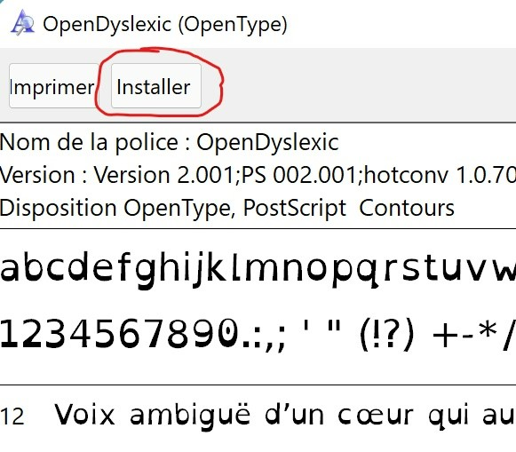
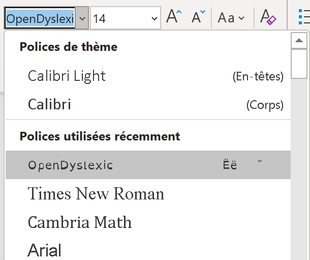

|
Bienvenue
sur le site pour télécharger OpenDyslexic :
|
Installer
OpenDyslexic
|
|
puis collez-le sur votre bureau. |
Une fois terminé, ouvrez le fichier, vous arriverez sur cette page : puis appuye Puis appuyez sur installer.
|
|
Maintenant,
allez sur word et changez la police comme ceci : 
|
Et Voilà,
vous pouvez désormais utiliser la police OpenDyslexic ^_~ !!
|